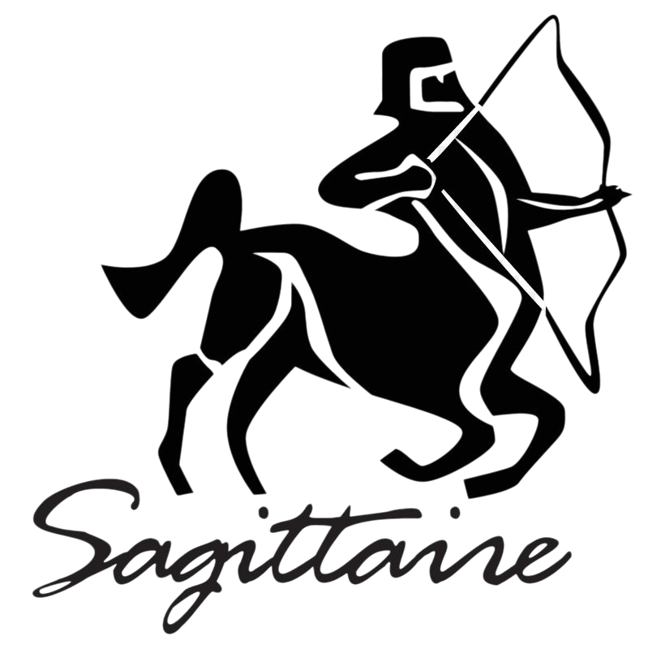

Info: Ο Τοξότης (♐) είναι αστρολογικό ζώδιο, το οποίο συνδέεται με τον αστερισμό του Τοξότη. Σύμφωνα με τον τροπικό ζωδιακό, ο Τοξότης καταλαμβάνεται από τον Ήλιο
από 22 Νοεμβρίου μέχρι 21 Δεκεμβρίου. Στον αστρικό ζωδιακό, ο αστερισμός καταλαμβάνεται κατά την περίοδο από 16 Δεκεμβρίου έως 14 Ιανουαρίου. Το ζώδιο απέναντι από τον Τοξότη είναι οι Δίδυμοι.
Πιο αναλυτικά τα βασικά χαρακτηριστικά του Τοξότη:
Ημερομηνίες:
22 Νοεμβρίου – 21 Δεκεμβρίου
Στοιχείο:
Φωτιά (Πάθος)
Ποιότητα:
Μεταβλητό (Ενθουσιώδης και μεγάλη αγάπη για τη γνώση)
Κυβερνήτης Πλανήτης:
Ο Δίας (συμβολίζει τη περιπέτεια και την ανεξαρτησία)
Αρνητικά:
Ευάλωτος , Επιπόλαιος , Δυσκολεύεται με τη ρουτίνα

Χαρακτηριστικά & Προσωπικότητα του Τοξότη
Ο Τοξότης είναι ένα ζώδιο που ξεχωρίζει για την αισιοδοξία, την ελευθερία και την αγάπη του για την περιπέτεια. Από τα βασικά χαρακτηριστικά του είναι η ανάγκη για εξερεύνηση, η ειλικρίνεια και η έντονη επιθυμία να ζει χωρίς περιορισμούς. Είναι άνθρωπος που αγαπά τα ταξίδια, τις νέες εμπειρίες και τη συνεχή εξέλιξη.
Το ζώδιο αυτό ανήκει στο στοιχείο της φωτιάς, κάτι που τον κάνει ενθουσιώδη, δραστήριο και γεμάτο ενέργεια. Οι Τοξότες δεν αντέχουν τη ρουτίνα και χρειάζονται συνεχώς νέες προκλήσεις για να νιώθουν ζωντανοί και δημιουργικοί.
Η προσωπικότητα του Τοξότη χαρακτηρίζεται από ειλικρίνεια, ανεξαρτησία και έντονη ανάγκη για ελευθερία. Είναι άνθρωπος που λέει τη γνώμη του χωρίς φίλτρα και προτιμά την αλήθεια, ακόμα κι αν είναι σκληρή. Παρόλο που μπορεί να φαίνεται ανήσυχος, έχει βαθιά φιλοσοφική σκέψη και έντονη ανάγκη να κατανοήσει τον κόσμο γύρω του.
Στην προσωπικότητά του κυριαρχεί η ανάγκη για ανάπτυξη, εμπειρίες και πνευματική εξέλιξη. Δεν αντέχει τον περιορισμό και αναζητά συνεχώς νέους ορίζοντες.
Καριέρα & Στοιχείο Τοξότη
Στην καριέρα, ο Τοξότης αποδίδει καλύτερα σε επαγγέλματα που απαιτούν ελευθερία, κινητικότητα και επικοινωνία. Μπορεί να διακριθεί σε τομείς όπως ο τουρισμός, η εκπαίδευση, τα ΜΜΕ, η φιλοσοφία, οι ξένες γλώσσες και γενικά σε επαγγέλματα που του επιτρέπουν να εξερευνά και να μαθαίνει συνεχώς.
Η αισιοδοξία του τον βοηθά να αντιμετωπίζει δυσκολίες με θετική διάθεση, ενώ η ενέργειά του τον κάνει να προχωρά μπροστά χωρίς να φοβάται το ρίσκο.
Ο Τοξότης ανήκει στο στοιχείο της φωτιάς, το οποίο σχετίζεται με το πάθος, την ενέργεια και την εξερεύνηση. Αυτό το στοιχείο τον κάνει ιδιαίτερα δυναμικό και ενθουσιώδη, ενώ του δίνει την ικανότητα να εμπνέει τους άλλους με τη θετική του στάση.
Συμβατότητα & Σχέσεις Τοξότη
Όσον αφορά τη συμβατότητα, ο Τοξότης ταιριάζει ιδιαίτερα με άλλα ζώδια της φωτιάς, όπως ο Κριός και ο Λέων, καθώς μοιράζονται ενέργεια, ενθουσιασμό και αγάπη για δράση. Επίσης, έχει πολύ καλή χημεία με ζώδια του αέρα, όπως ο Ζυγός και ο Υδροχόος, τα οποία τον βοηθούν να διατηρεί ελευθερία και πνευματική ισορροπία.
Οι σχέσεις του Τοξότη βασίζονται στην ελευθερία, την ειλικρίνεια και την περιπέτεια. Δεν αντέχει την κτητικότητα και χρειάζεται έναν σύντροφο που να σέβεται την ανεξαρτησία του. Θέλει σχέσεις που του προσφέρουν χαρά, εμπειρίες και συνεχή εξέλιξη.
Στον έρωτα είναι αυθόρμητος, χαρούμενος και ειλικρινής. Δεν του αρέσουν τα παιχνίδια και προτιμά καθαρές, άμεσες σχέσεις. Για να λειτουργήσει μια σχέση μαζί του, χρειάζεται εμπιστοσύνη, ελευθερία και κοινές εμπειρίες.
Συχνές Ερωτήσεις για τον Τοξότη (FAQ)
❓ Ποια είναι τα βασικά χαρακτηριστικά του Τοξότη;
Ο Τοξότης θεωρείται ένα από τα πιο αισιόδοξα, ανεξάρτητα και περιπετειώδη ζώδια του ζωδιακού κύκλου. Ανήκει στο στοιχείο της Φωτιάς, γεγονός που του προσδίδει ενέργεια, ενθουσιασμό και έντονη επιθυμία για δράση και εξερεύνηση. Οι άνθρωποι που έχουν γεννηθεί κάτω από αυτό το ζώδιο χαρακτηρίζονται από ειλικρίνεια, αυθορμητισμό και αγάπη για την ελευθερία. Ο Τοξότης αναζητά συνεχώς νέες εμπειρίες, γνώσεις και προοπτικές, ενώ συχνά διαθέτει φιλοσοφική και πνευματική διάθεση. Δεν του αρέσουν οι περιορισμοί και προτιμά να ζει με τρόπο που του επιτρέπει να εξελίσσεται και να ανακαλύπτει νέους ορίζοντες. Παράλληλα, είναι κοινωνικός, αισιόδοξος και συχνά μεταδίδει θετική ενέργεια στους ανθρώπους γύρω του. Η περιέργεια, η ελευθερία και η αναζήτηση της αλήθειας αποτελούν βασικά στοιχεία της προσωπικότητάς του.
❓ Είναι ο Τοξότης καλός στα οικονομικά;
Ο Τοξότης μπορεί να παρουσιάζει σημαντικές ικανότητες στα οικονομικά, αλλά η σχέση του με το χρήμα χαρακτηρίζεται συχνά από ελευθερία και τόλμη. Δεν φοβάται να πάρει οικονομικά ρίσκα, ιδιαίτερα όταν πιστεύει ότι υπάρχει προοπτική εξέλιξης ή προσωπικής ικανοποίησης. Συχνά ξοδεύει χρήματα για ταξίδια, εκπαίδευση, εμπειρίες και δραστηριότητες που διευρύνουν τους ορίζοντές του. Παρότι δεν θεωρείται το πιο συντηρητικό ζώδιο στη διαχείριση των οικονομικών, διαθέτει αισιοδοξία και προσαρμοστικότητα που τον βοηθούν να ανακάμπτει από δύσκολες καταστάσεις. Όταν αποκτήσει σαφείς στόχους και πειθαρχία, μπορεί να αναπτύξει σημαντική οικονομική σταθερότητα. Η επιχειρηματική του διάθεση, η αυτοπεποίθηση και η προθυμία του να εκμεταλλεύεται νέες ευκαιρίες συχνά λειτουργούν προς όφελός του.
❓ Είναι ο Τοξότης υπερβολικά ειλικρινής και αυθόρμητος στις σχέσεις;
Ο Τοξότης είναι γνωστός για την ειλικρίνειά του, η οποία πολλές φορές μπορεί να θεωρηθεί υπερβολικά άμεση ή ακόμη και σκληρή. Στις προσωπικές του σχέσεις προτιμά την αλήθεια και την αυθεντικότητα από τις διπλωματικές ή επιφανειακές συμπεριφορές. Είναι αυθόρμητος, ενθουσιώδης και αγαπά τις σχέσεις που του επιτρέπουν να διατηρεί την ανεξαρτησία και την προσωπική του ελευθερία. Δεν αισθάνεται άνετα σε καταστάσεις που περιλαμβάνουν υπερβολικό έλεγχο ή συναισθηματική πίεση. Όταν ερωτεύεται πραγματικά, γίνεται γενναιόδωρος, προστατευτικός και ιδιαίτερα υποστηρικτικός απέναντι στον σύντροφό του. Παράλληλα, η αισιοδοξία και η θετική του διάθεση συμβάλλουν στη δημιουργία δυνατών σχέσεων που βασίζονται στην εμπιστοσύνη, την επικοινωνία και τις κοινές εμπειρίες.
❓ Γιατί ο Τοξότης δεν αντέχει τη ρουτίνα;
Ο Τοξότης διαθέτει μια ισχυρή ανάγκη για ελευθερία, περιπέτεια και συνεχή εξέλιξη, γεγονός που τον κάνει να δυσκολεύεται ιδιαίτερα με τη ρουτίνα και τη μονοτονία. Η επανάληψη και η στασιμότητα μπορεί να τον κάνουν να νιώθει περιορισμένος και να μειώνουν τον ενθουσιασμό του για τη ζωή. Για τον λόγο αυτό, αναζητά συνεχώς νέες εμπειρίες, διαφορετικά περιβάλλοντα και ευκαιρίες για μάθηση και προσωπική ανάπτυξη. Τα ταξίδια, η εξερεύνηση και η ανακάλυψη νέων ιδεών αποτελούν σημαντικές πηγές έμπνευσης για τον Τοξότη. Παράλληλα, η ανάγκη του να διατηρεί την ανεξαρτησία του τον ωθεί να αποφεύγει καταστάσεις που θεωρεί περιοριστικές. Η αγάπη του για την αλλαγή και η αισιοδοξία του αποτελούν βασικά στοιχεία που διαμορφώνουν τον τρόπο ζωής και τις επιλογές του.
❓ Είναι ο Τοξότης πάντα αισιόδοξος ή κρύβει και πιο σκοτεινή πλευρά;
Ο Τοξότης είναι γνωστός για την αισιοδοξία, τον ενθουσιασμό και τη θετική του στάση απέναντι στη ζωή. Ωστόσο, όπως κάθε άνθρωπος, διαθέτει και πιο σύνθετες πτυχές της προσωπικότητάς του. Παρότι συνήθως προσπαθεί να βλέπει τη θετική πλευρά των καταστάσεων, μπορεί να βιώσει περιόδους αμφιβολίας, απογοήτευσης ή εσωτερικής αναζήτησης. Όταν αισθάνεται ότι περιορίζεται, ότι δεν εξελίσσεται ή ότι χάνει την προσωπική του ελευθερία, μπορεί να γίνει ανήσυχος, νευρικός ή να απομακρυνθεί από τους άλλους. Συχνά προτιμά να αντιμετωπίζει τις δυσκολίες μέσα από νέες εμπειρίες και αλλαγές, αντί να παραμένει στάσιμος. Η αισιοδοξία του δεν σημαίνει απουσία προβληματισμών, αλλά αποτελεί έναν τρόπο διαχείρισης των προκλήσεων και αναζήτησης νέων προοπτικών.
❓ Ποιοι είναι μερικοί διάσημοι Τοξότες στον κόσμο;
Πολλές γνωστές προσωπικότητες από τον χώρο της μουσικής, του κινηματογράφου και της ψυχαγωγίας έχουν γεννηθεί κάτω από το ζώδιο του Τοξότη. Ανάμεσά τους βρίσκεται η Taylor Swift, η οποία έχει ξεχωρίσει για τη δημιουργικότητα, την ανεξαρτησία και την καλλιτεχνική της εξέλιξη. Ο Brad Pitt αποτελεί μία από τις πιο αναγνωρίσιμες προσωπικότητες του κινηματογράφου, ενώ η Britney Spears έχει συνδεθεί με την ενέργεια και τη δυναμική παρουσία στη μουσική βιομηχανία. Επιπλέον, ο Jay-Z και η Scarlett Johansson αποτελούν χαρακτηριστικά παραδείγματα προσωπικοτήτων που έχουν επιτύχει σημαντική αναγνώριση και επιρροή. Πολλοί αστρολόγοι θεωρούν ότι χαρακτηριστικά όπως η αισιοδοξία, η αγάπη για την ελευθερία, η φιλοδοξία και η περιπετειώδης φύση αντικατοπτρίζονται στις προσωπικότητες αυτών των διάσημων ανθρώπων.
 ΚΡΙΟΣ
ΚΡΙΟΣ
 ΤΑΥΡΟΣ
ΤΑΥΡΟΣ
 ΔΙΔΥΜΟΙ
ΔΙΔΥΜΟΙ
 ΚΑΡΚΙΝΟΣ
ΚΑΡΚΙΝΟΣ
 ΛΕΩΝ
ΛΕΩΝ
 ΠΑΡΘΕΝΟΣ
ΠΑΡΘΕΝΟΣ
 ΖΥΓΟΣ
ΖΥΓΟΣ
 ΣΚΟΡΠΙΟΣ
ΣΚΟΡΠΙΟΣ
 ΤΟΞΟΤΗΣ
ΤΟΞΟΤΗΣ
 ΑΙΓΟΚΕΡΩΣ
ΑΙΓΟΚΕΡΩΣ
 ΥΔΡΟΧΟΟΣ
ΥΔΡΟΧΟΟΣ
 ΙΧΘΥΕΣ
ΑΡΙΘΜΟΛΟΓΙΑ
ΙΧΘΥΕΣ
ΑΡΙΘΜΟΛΟΓΙΑ